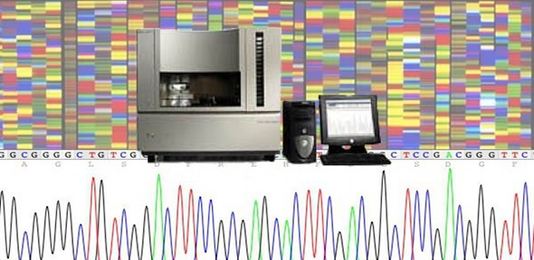
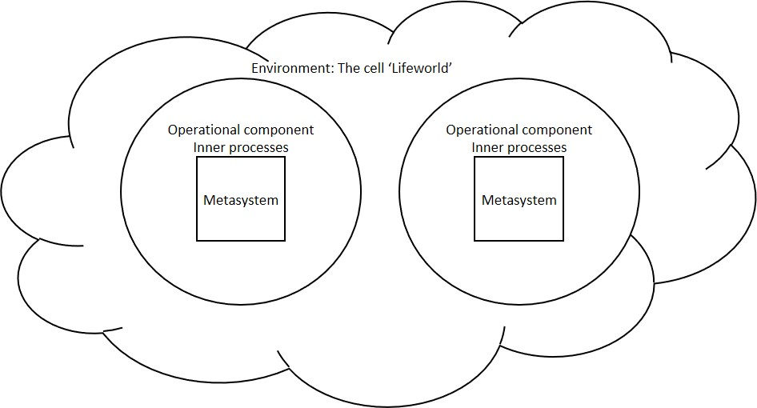
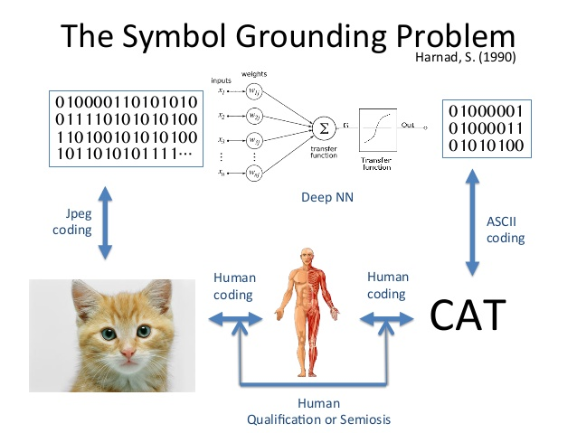
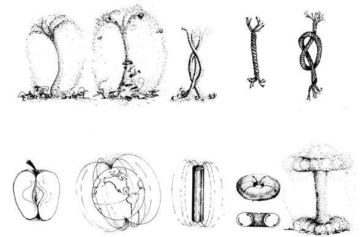
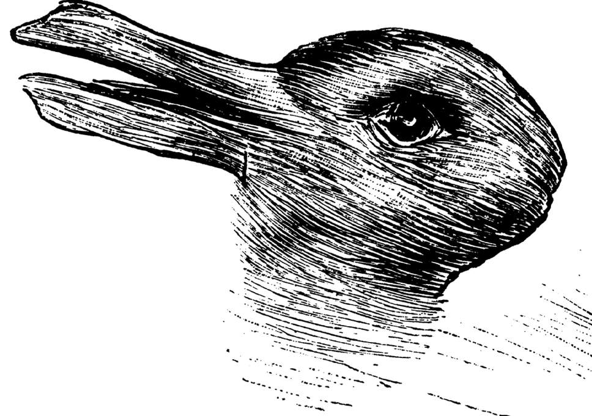

Теория Большого Взрыва?¶
24. Физика¶
КЛЮЧЕВЫЕ ВОПРОСЫ:
Если мы имеем представление о возникновении мира, отличное от других, можем ли мы сказать, что наша социальная реальность также изменится?
В школе все изучают такие понятия как масса, пространство, время и электрический заряд. Но что это за вещи? Как мы понимаем, что они реальные?
Почему нет последовательной неоспоримой теории всего, что объединяет теорию относительности с квантовой механикой?
ПОЧЕМУ ЭТО ВАЖНО?
Было время, когда наука верила, что мир природы стал доступен для расчетов и прогнозов. Научное наблюдение произвело объективность (Wiener, 1988)

Научные факты были бесспорными, и научная практика физики стала основой для исследования общества, экономики, искусства и образования.
Вопросы Эйнштейна касались восприятия ученых: восприятие было относительно к свету, пространству и времени
В квантовой механике наблюдение было относительно в зависимости от контекста, в котором оно происходит, но и связано с самой структурой природного мира: наблюдение изменяет мир.
25. Биология¶
КЛЮЧЕВЫЕ ВОПРОСЫ:
Что появилось первым: клетка или ДНК?
Как молекула (ДНК) относится к другой молекуле?
Какова связь между клетками и атомами?
ПОЧЕМУ ЭТО ВАЖНО?
Жизнь - клеточная. Но что такое клетка? В школе мы узнаем, что биология - это сильно отличающийся от физики предмет. Биология имеет дело с живыми процессами, обратной связью, гомеостазом и т. д. Физика касается вечных законов механики. Мы принимаем, что биологические системы состоят из атомов и молекул, но связь между процессами механизмов атомов и молекул и живыми процессами растущего эмбриона покрыты тайной.
Как бы выглядела наука, если бы мы рассматривали биологию и физику как единое? Влияние квантовой механики на биологические системы в настоящее время вызывает большой интерес, так как биологические явления, такие как чувствительность, успешно объясняются квантовыми явлениями.
В биологии и физике существует большое количество основных вещей, которые мы не знаем. Что происходит на квантовом уровне? Что такое масса, время или пространство? Все говорят об «энергии», но что это? Почему все в природе кажется сцепленным вместе - планеты, растения, звезды, человек, сознание?
26. Решая убить планету¶
КЛЮЧЕВЫЕ ВОПРОСЫ:
Являются ли экологические проблемы результатом провала человечества в принятии правильных решений?
Как люди могут принимать правильные решения?
Почему люди так недальновидны в развитии новых технологий?
ПОЧЕМУ ЭТО ВАЖНО?
В своей новой книге «Novocene” Джеймс Лавлок – создатель теории Геи, согласно которой ученый предвидел глобальные угрозы – предположил, что именно Искусственный интеллект может спасти планету, потому что у Искусственного интеллекта нет тех проблем в принятии эффективных решений, которые есть у человека, для решения глобальных проблем человечества.
В основе наших проблем по вопросам климата лежит решение. Когда люди принимают решения, будь то на индивидуальном уровне или на уровне корпораций, руководящих органов, министерских учреждений, политических конференций, международных соглашений или групп давления, умы собираются вместе для координации коллективного курса действий, подходящего для группы.
Плохие решения возникают между организациями, включая университеты, где каждая организация стремится поддерживать свою идентичность и миссию. Студенты, которые получают образования в университетах в качестве юристов, бизнесменов, инженеров и т. д., иногда могут продолжать наносить ущерб обществу.
Решения принимаются в условиях ограничений. Существуют непосредственные ограничения, которые включают в себя доступную информацию о ситуации, навыки и возможности людей, психологию, технологические ресурсы и каналы связи для координации действий.
Более тонкие ограничения включают отношения власти в группе принятия решений и более широкие политические предпосылки принятия решений.
Решения принимаются в меж-субъективном контексте, даже если они являются решениями отдельных лиц для их собственных нужд. Например, учащиеся, столкнувшиеся с выбором предмета или образовательной организации, должны иметь дело с несколькими ограничениями, среди которых информация о суждениях других относительно их пригодности для конкретного курса, информация о перспективах карьерного роста, информация об альтернативах, информация о расходах, а также такие как самооценка стремлений, неопределенности, приверженность и мотивация.
27. Инновации и научный прогресс¶
КЛЮЧЕВЫЕ ВОПРОСЫ:
Увеличивают ли или уменьшают инновации сложность и неопределенность в обществе?
Какова взаимосвязь между инновациями людей и экосистемой?
Каким образом одна инновация приводит к другой?
ПОЧЕМУ ЭТО ВАЖНО?
С одной стороны постепенно улучшаются технологии: сегодняшние автомобили намного лучше, чем автомобили 1950-х годов, самолеты падают редко, а медицинские процедуры, которые когда-то были бы очень опасны, теперь являются рутинными и безопасными. Технологии развиваются: они становятся более эффективными, безопасными и дешевыми.
Однако развитие справедливости, свободы, социального обеспечения, образования и предотвращения конфликтов не было столь впечатляющим.
Технологический прирост повышенной эффективности создает систематические проблемы где-нибудь в других местах: автомобили превращают землю в асфальт, загрязняют воздух дымом и шумом, вызывают пробки, приводят к путешествию на все большие расстояния и создают патологическую одержимость скоростью.
Предыдущее поколение быстрых автомобилей создает новую неопределенность, которая приводит к следующему поколению быстрых автомобилей. Поиск новых медицинских процедур и лекарств является реакцией на неопределенность, вызванную предыдущим поколением препаратов и процедур. Создание новых способов измерения эффективности социальных систем - реакция на провал существующих способов измерения социальных систем.
28. Компьютеры и наука¶
КЛЮЧЕВЫЕ ВОПРОСЫ:
Могут ли ученые быть заменены компьютерами?
В каких областях научного исследования не задействованы компьютеры?
Поскольку компьютеры влияют на информацию, что такое информация и как она относится к науке?
ПОЧЕМУ ЭТО ВАЖНО?
После достижений физики в XX веке компьютеры стали важными инструментами для расчета вероятностей, а не для определенных объективных наблюдений.
К 1940-м годам компьютеры использовались для расчета решений статистических уравне- ний in physics: теоретическое раз- витие можно было ускорить с помощью меха- нических средств для расчета.
С тех лет и по сей день компьютер преобразовали науку до точки доминирования над ней. Сложность статистического анализа была использована при обработке огромных объемов данных (таких как человеческий геном), создающих новые шаблоны и описания, которые раскрывают новые идеи.
Компьютерные модели, похоже, имитируют природу, демонстрирующую прогностическую силу в своем поведении, без какой-либо основной гипотезы, а результаты поисковых процедур в обширной базе данных ресурсов в Интернете могут легко создать впечатление, что мир - это Интернет.
Это привело к инструментализации научного исследования. Достижения в области машинного обучения, готового программного обеспечения для обработке данных социальных наук, инструментов моделирования от инженерных наук до биологии создают научную среду, в которой невозможность контролировать доступное программное обеспечение является бОльшим препятствием для профессионального успеха, чем невозможность критически мыслить о том что такое быть опытным.
 {width=”\columnwidth”}
{width=”\columnwidth”}
29. ДНК и информация¶
КЛЮЧЕВЫЕ ВОПРОСЫ:
Если ДНК содержит информацию, эта информация такая же, как информация на компьютере?
Ферменты и белки также содержат информацию? Как эта информация относится к информации в ДНК?
Как клетки в конце пальца ребенка знают, что они находятся в конце пальца? Говорит ли им об этом ДНК?
ПОЧЕМУ ЭТО ВАЖНО?
Никто не знает, что такое информация: нет общепринятого определения, которое объединяет информацию в ДНК с информацией в компьютере или информацией в физике.
Однако секвенирование информации в ДНК и генетике в настоящее время является огромной отраслью. В большинстве этих работ доминируют крупномасштабные компьютерные исследования. Есть опасения, что этот акцент на исследования, основанный на использовании компьютеров, вытеснит пространство для размышления или переосмысления того, как работает жизнь. В недавней статье Амос утверждает, что управляемая компьютерами «большая наука» - это то, о чем мы все должны вольноваться, потому что: «Секвенирование генома предлагает небольшую научную подготовку, потому что большая часть работы выполняется машинами и техническими специалистами … это антитеза хорошей науки, которая в значительной степени свободна от гипотез и включает небольшой экспериментальный дизайн. Почему мы помещаем наши немногие оставшиеся финансируемые государством яйца в пропорционально меньше и меньше корзин? »(Большая наука, большой ажиотаж, большая ошибка 2013 года)
Утопические видения будущего науки предусматривают все возрастающую силу машинного обучения и большие данные, дающие ответы на фундаментальные научные и социальные проблемы. При ближайшем рассмотрении результаты таких массовых вычислений, как анализ генетических образцов или анализ поведения людей в социальных сетях, делают лишь немногие, чем усиливают работу тысяч людей, если они будут терпеть скуку сидения вокруг подсчета вещи.

30. Клеточная коммуникация и человеческая коммуникация¶
КЛЮЧЕВЫЕ ВОПРОСЫ:
Существует ли связь между тем, как клетки общаются друг с другом и как мы разговариваем друг с другом
Какова связь между клеточным взаимодействием и физикой?
Какова связь между клеткой и сознанием?
ПОЧЕМУ ЭТО ВАЖНО?
Клетки взаимодействуют через процесс, посредством которого белки продуцируются ДНК внутри клетки, и эти белки образуют рецепторы на поверхности клетки, которая соединяется с белками в окружающей среде клетки, произведенными другими клетками.
Клетки организуются в соответствии с балансом между их внутренней организацией и их внешней средой. Это процесс, указывается в биологии как «трансдукция»
Нарисованная абстрактно, клетка является границей, которая поддерживает себя через балансировку коммуникаций внутри границ и связь за пределами границами. {width=”\textwidth”}
Люди общаются аналогичным образом, организуя себя в соответствии с балансом между внутренней (психологической) средой и внешней (социальной) средой.
Если клетка взаимодействует для поддержания своей границы, люди взаимодействую с другими людьми, чтобы поддерживать свою идентичность?
Степень, в которой человеческое общение является деятельностью, направленной на сохранение идентичности, может быть проверена путем рассмотрения тех вещей, которыми большинство людей не хочет делиться (например, секреты, вещи, которые показывают, что мы действительно думаем, но не хотим, чтобы их знали, и т. д. )
31. Откуда происходит язык?¶
КЛЮЧЕВЫЕ ВОПРОСЫ
Как это возможно, что такое сложное понятие как человеческий язык происходит от чего-то простого?
Какова надежда на искусственный интеллект, если сложность языка не может быть воспроизведена или объяснена?
Когда мы говорим, что человеческий язык «сложный», что мы имеем в виду?
ПОЧЕМУ ЭТО ВАЖНО
В теории информации проблема интерпретации символа относится к неспособности объяснить появление знаков и токенов (слов) с референтами из основных принципов без использования априорных различий.
Описание абстрактных механизмов, которые показывают, как структуры данных могут возникать и формировать основу очень простых языков, было неуловимым, хотя были интересные попытки Холланды (модель «echo») и Флориди. {width=”.8\textwidth”}
Проблема интерпретации символа является принципиальной в более широкой теме морфогенеза, и, действительно, появление дискретных символов из основных принципов не отличается от появления дискретных форм из основных принципов. Они могут быть одним и тем же!
Сама сложность недостаточно понятна. Человеческий язык имеет множество форм - много слов для множества вещей. Но человеческий язык также демонстрирует богатые узоры, которые, как представляется, накладываются друг на друга, как поэзия.
32. Эмоции и поведение человека¶
КЛЮЧЕВЫЕ ВОПРОСЫ
Что такое эмоции? Как они относятся к мыслям?
Почему некоторые вещи, такие как музыка, футбол и горе, порождают такие сильные эмоции?
Будут ли машины испытывать эмоции?
ПОЧЕМУ ЭТО ВАЖНО
Эмоции при прослушивании музыки, или эмоции при просмотре фильма, или скорбь после смерти любимого человека - это мощные ощущения всего тела.
Эмоции, похоже, не просто у нас в голове.
Кажется, существуют связи между волнами эмоций, которые проходят через человека, слушая музыку, скорбя о смерти близкого человека, глядя в глаза любимого человека, отмечая футбольный матч и так далее.
Каждый эффект, такой как изменение состояния человека, будет иметь связанный с ним опыт, и поэтому каждое государство будет стремиться перейти в другое состояние. В моменты интенсивного эмоционального переживания, как слезы, его физические эффекты, проникают сквозь нас и имеют реальные физические побочные эффекты.
Явления, подобные музыке, очень важны для понимания эмоций. Недавние исследования «коммуникативной музыкальности» изучают эмоциональные и музыкальные отношения между матерями и младенцами (Malloch and Trevarthen 2010)
При прослушивании музыки эмоции, похоже, связаны с проблемой ожиданий (Huron 2008). Это означает, что мои ожидания нормативно построены, тогда степень, в которой они могут отклоняться от нормальных условий, может быть показателем эмоций.
{width=”\columnwidth”}
33. Экология и эволюция¶
КЛЮЧЕВЫЕ ВОПРОСЫ
Где фактически наблюдаются эволюционные процессы?
В чем разница между дарвиновской эволюцией и креационизмом?
Наследуют ли животные привычки своих родителей в генах?
ПОЧЕМУ ЭТО ВАЖНО
Бейтсон утверждает, что «сегодня совершенно очевидно, что [организм] не является единицей выживания в свободном биологическом мире. Единицей выживания является организм плюс окружающая среда. Мы учимся на горьком опыте разрушающего окружающую среду организма, разрушающего себя».
Если единицей выживания организма является «организм + окружающая среда», как мы должны понимать окружающую среду?
Человеческое развитие, если оно будет проходить в незнании окружающей среды - будь то экологическая, политическая, экономическая и т. д., приведет к катастрофе.
Бейтсон утверждает, что «единица эволюционного выживания оказывается идентичной единице разума».
«Экология, в самом широком смысле, оказывается изучением взаимодействия и выживания идей и программ (т. е. различий, комплексов различий и т. Д.) в схемах».
Если мы допустим ошибку, взяв неправильную единицу, «вы окажетесь в зависимости от вида по сравнению с другими видами вокруг него или против окружающей среды, в которой он действует. Человек против природы. В конечном итоге вы придете к загрязнению залива Канеохе, озера Эри, и выражению «давайте построим большие атомные бомбы, чтобы уничтожить ближайших соседей» (Bateson 1987)
{width=”\columnwidth”}
34. Наследственность: Ламарк и Дарвин¶
КЛЮЧЕВЫЕ ВОПРОСЫ
Откуда у слона хобот, а у жирафа длинная шея?
Наследуем ли мы привычки наших предков через гены?
Является ли «выживанием наиболее приспособленного» механизмом, посредством которого эволюционирует природа?
ПОЧЕМУ ЭТО ВАЖНО
Дарвин очень сильно повлиял на нас. От эволюционной экономики до марксистской теории, антропологии, физики и генетики каждая из наук была под влиянием дарвинистским мышлением.
Бейтсон утверждает, что основная идея Ламарка о «наследовании приобретенных признаков», хотя и была ошибочной, была первой, рассмотревшей вопрос «ума» от первых принципов, используя «привычку» как одну из своих аксиом. Разум появился по привычке.
 {width=”\textwidth”}
{width=”\textwidth”}Бейтсон далее утверждает, что механизм Дарвина, несмотря на всю его гениальность, ушел от уравнения в вопросе о выживании и заменил его процессом естественного отбора.
Недавние биологические исследования предполагают, что Ламарк, возможно, был по крайней мере частично прав: например, наследование предрасположенности к астме, коррелирующему с курением бабушек и дедушек. Клеточные механизмы адаптации могут стоять за удивительными закономерностями наследования, которые выходят за рамки естественного отбора.
35. Информация¶
КЛЮЧЕВЫЕ ВОПРОСЫ
Что такое информация?
Какова связь между информацией и значением?
Что значит быть «осведомленным»?
ПОЧЕМУ ЭТО ВАЖНО
Одним из главных аргументов в науке сегодня является природа информации.
Этот курс состоит из информации: это история образования. Системы формального образования привлекают механизмы кодирования знаний и навыков людей в информацию.
На экране компьютера есть какая-то информация, которую вы просматриваете. Информация анализируется, и анализ дает больше информации.
Биологи анализируют информацию в ДНК, а физики ищут информацию в черных дырах. {width=”\textwidth”}
Информация имеет измерение, разработанное Клодом Шенноном, без уравнений которого интернет не будет работать. В работе Шеннона информация эквивалентна «неопределенности».
Информация используется для принятия решений. Нам сообщают лучшую информацию, мы принимаем лучшие решения. Все больше и больше усилий вкладывается в создание все большей информации.
Если мы не понимаем информацию, что мы подразумеваем под смыслом?
36. Сдвиги и анализ парадигмы¶
КЛЮЧЕВЫЕ ВОПРОСЫ
Как мы понимаем, что мы правильно проводим исследование?
Что происходит, когда новое открытие превращает все, что мы знали до этого с ног на голову (например, Коперник или Эйнштейн)?
ПОЧЕМУ ЭТО ВАЖНО
Научная история полна случаев, в которых наука была перевернута. Томас Кун называет эти моменты «сдвигом парадигмы» (Kuhn, 1996).
Такие моменты являются результатом аналитического подхода к науке, где фундаментальные механизмы генерации в мире, как он есть, пересматриваются снизу вверх. {width=”\textwidth”}
Большинство исследований практически во всех областях университетов являются не настолько аналитичными, и аналитическую работу часто трудно опубликовать.
Большинство исследовательских работ вместо этого синтетичны: подход к исследованиям, который собирает данные из различных эмпирических ситуаций и пытается подогнать пояснение к воспринимаемым явлениям.
37. Космологическое мышление¶
КЛЮЧЕВЫЕ ВОПРОСЫ
Должны ли мы думать о деталях конкретных явлений или думать о том, как вся вселенная порождает определенные явления?
Как можно проверить космологию?
ПОЧЕМУ ЭТО ВАЖНО
Результатом аналитического мышления является более глубокая космология о том, почему вселенная такова
Такие космологии характеризуют работу таких научных революционеров, как Ньютон, Галилео, Эйнштейн. В каждом случае они радикально переосмысливают историю вселенной.
Чтобы понять, какие лежат в основе механизмы, нужно видеть за границами того, что сразу воспринимается.
Синтетические подходы к науке, а не аналитические подходы, доминируют в большинстве того, что называется «исследованиями» в университетах: в физике единой теорией была цель для многих поколений физиков, пытавшихся объединить квантовую механику с относительностью и Ньютоновской механикой: до сих пор подход не удался. В биологии синтез приводит к разнообразию специализированных теорий эпигенеза и генетики.
Как и в случае с физикой, ничего не последовало, и на самом деле нет объяснения способов, с помощью которых клетки организуются, чтобы создать сердца, мозг и пальцы. В медицине синтетические методы собирают доказательства «маркеров» болезней от генетики, неврологии, эндокринологии и т. д., а затем стремятся объяснить болезнь через присутствие маркеров.
Поэтому не следует удивляться тому, что научные исследования в области обучения и образования (из которых биологические, физические и физиологические теории являются подмножеством) не имеют согласованности и объяснительной силы.